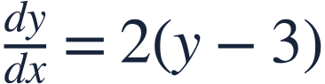
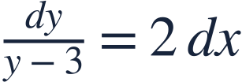
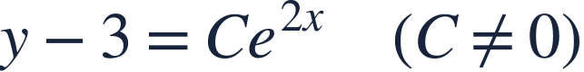
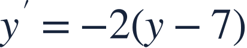

Separation and equilibrium
변수분리와 평형해

Separate variables while keeping track of any equilibrium solution lost by division.
변수를 분리할 때 나눗셈 때문에 빠질 수 있는 평형해도 확인합니다.

Separate variables while keeping track of any equilibrium solution lost by division.
변수를 분리할 때 나눗셈 때문에 빠질 수 있는 평형해도 확인합니다.
The constant function y=3 solves the equation before any division.
나누기 전에 상수함수 y=3이 방정식의 해임을 확인하세요.

Put all y-dependence on one side and x-dependence on the other.
y에 관한 식과 x에 관한 식을 서로 다른 쪽에 모읍니다.
Integrate both sides and retain the absolute value in the logarithm.
양변을 적분하고 로그의 절댓값을 유지합니다.

Exponentiation and a signed constant capture both non-equilibrium branches.
지수화하고 부호 있는 상수를 사용하여 두 비평형 가지를 나타냅니다.
Allowing C=0 restores the equilibrium solution.
C=0도 허용하면 평형해가 다시 포함됩니다.
Dividing by y−3 without checking y=3 can discard a valid solution.
y=3을 확인하지 않고 y−3으로 나누면 올바른 해를 잃을 수 있습니다.

Find the equilibrium solution.
평형해를 구하세요.